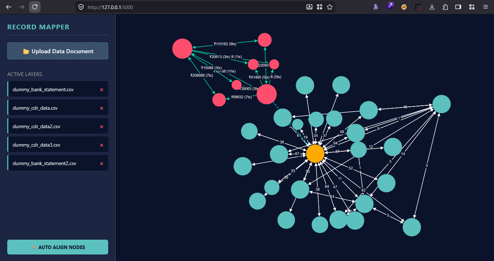
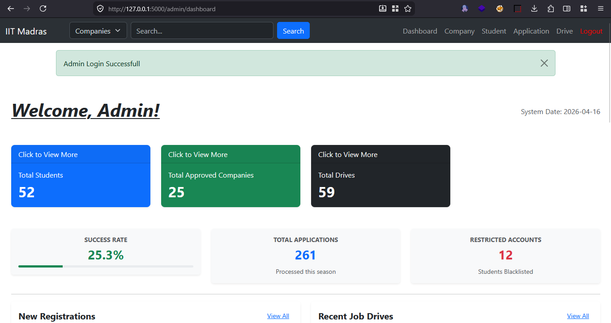
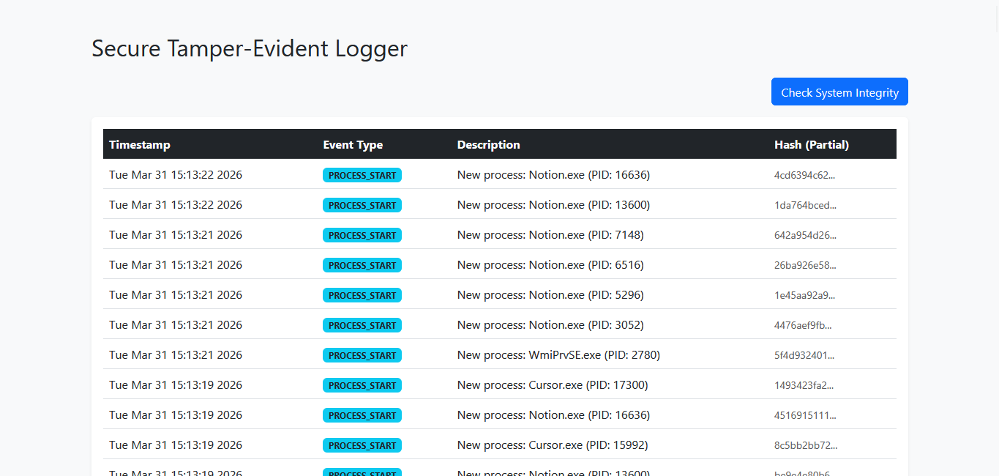
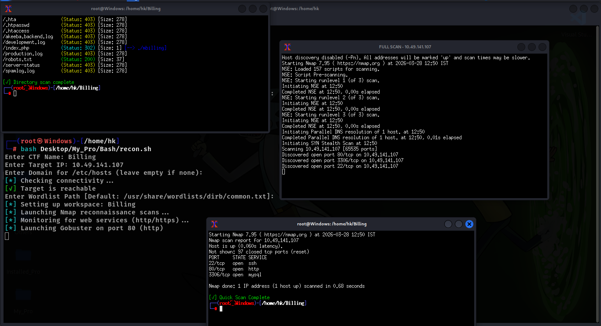
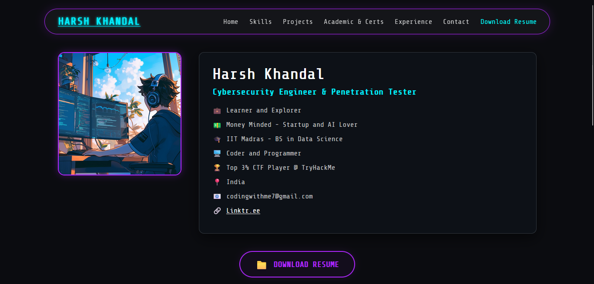
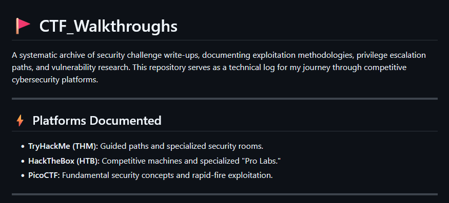
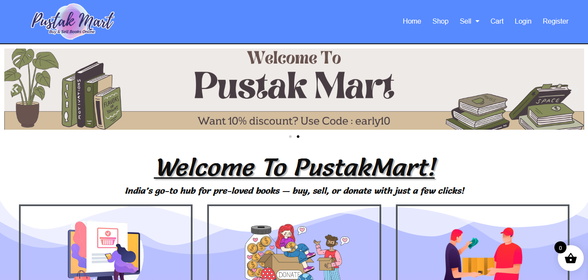
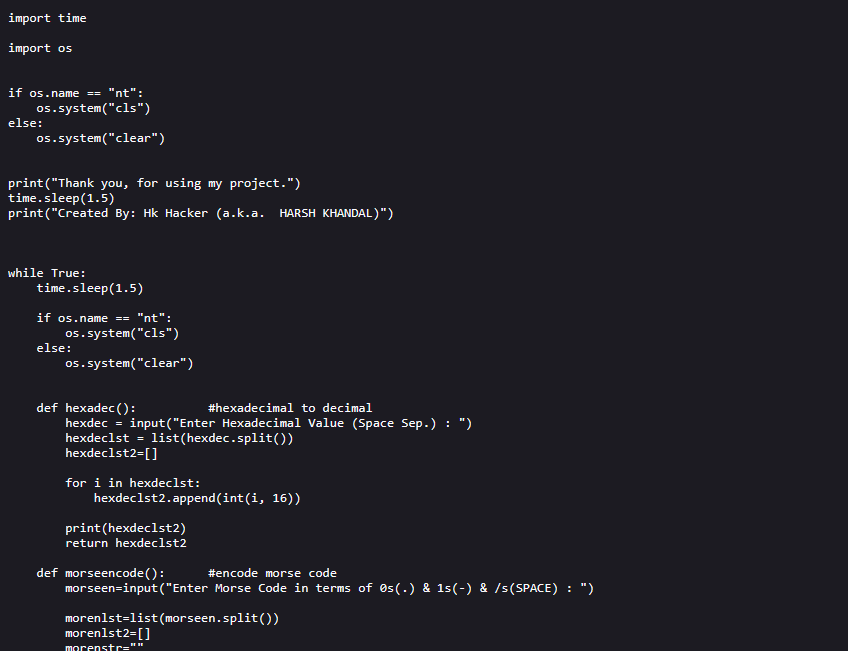
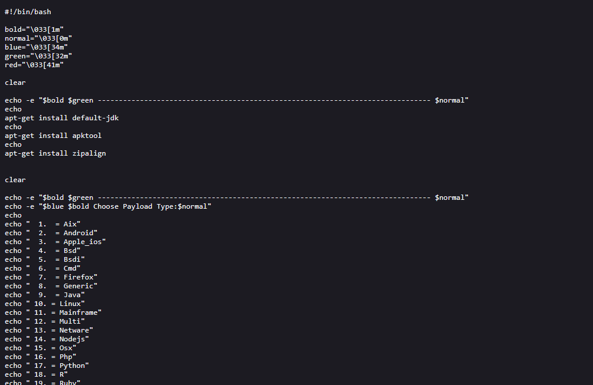

/Project_Archive

Cyber Cell Record Mapper (CCRM)
An open-source, lightweight forensic link-analysis intelligence tool designed for local Cyber Cell units to automatically cross-examine and visualize multi-modal operational data sheets.

College Placement Portal
College Placement Portal Web Application using Python Flask. IITM Bs in Data Science Mad-1 Project Jan-2026.
Admin Login HoneyPot
Fake Login Page HoneyPot for Attackers and Hackers.

Tamper-Evident Logging System Using Python
Python Logging System inspired by BlockChain Hash Method.

CTF Reconnaissance Automation Bash Script
It saves time, reduces manual effort, and ensures you don’t miss critical recon steps.

Harsh K. Portfolio
A high-performance, responsive personal portfolio engineered with a "Cyber-Hacker" aesthetic to showcase my expertise in Data Science and Cybersecurity.
N8n Workflows Vault
This repository contains my custom n8n workflows for utility bots and AI agents.

Hk Store - Multi-Vendor E-commerce Platform
A custom-built PHP e-commerce system featuring distinct portals for Administrators, Vendors, and Customers.

Marghazi'26 Cyber CTF
Capture the flag short game... Cyber CTF Walkthrough and task details.

CTF Walkthroughs
This repository serves as a technical log for my journey through competitive cybersecurity platforms.

Onshape Mouse
3d Cad Mouse Built in Onshape
.png)
Hangman Game : Python CLI
Fun CLI Hangman Game.

GUI Morse Code System
Read and Write Morse code from text and even transmit them through sound and Manual Morse coding is also Available

Converter V2 Python
Project 1 Converter (Computer Number system and Morse) Version 2 (GUI Enabled)

Python GUI AI Assistant
A Simple GUI AI Assistant completely on your local machine. Made using Python3 Tkinter for GUI and Ollama for AI Capabilities.

Go Up : Simple Godot Game
Simple Game Built in godot.

PustakMart : Buy & Sell Second Hand Books Online
Wordpress Site for Buying and Selling of Second Hand Books Online

Converter V1 Python
Project Converter (Computer Number system and Morse) Version 1 (CLI)

Bash Script : Payload Generator
First Project